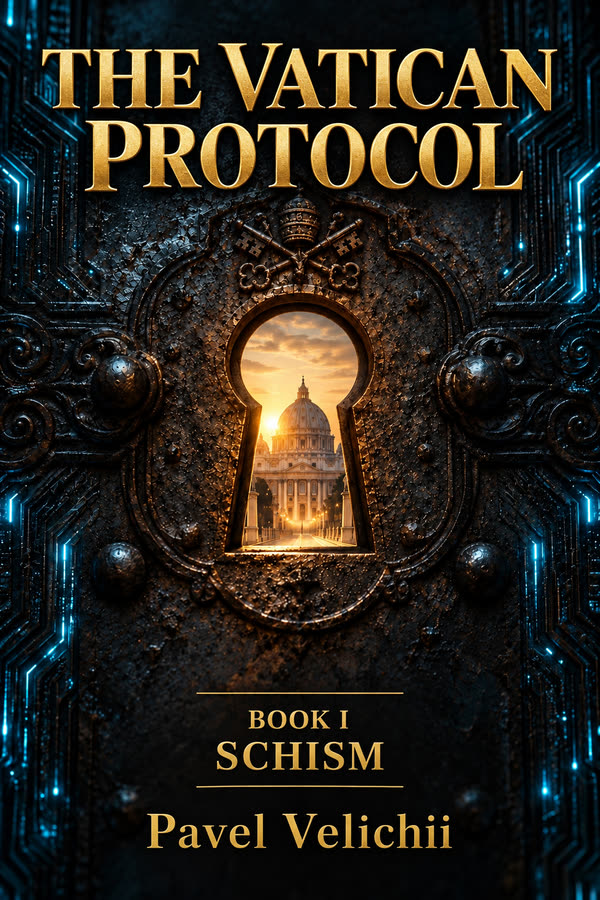

SALVATORE VENTRESCA
L’archivista
Un frate che lavora nell’archivio vaticano. La sua scoperta avvia l’indagine.
Un documento datato nel futuro. Una morte nell’Archivio Vaticano. Una macchina che potrebbe decidere chi ha diritto all’ultima parola.
01 / IL ROMANZO
All’interno degli archivi vaticani, un documento impossibile trasforma un’indagine in una crisi di autorità. Tra teologia, intelligenza artificiale e memoria, ogni testimonianza può essere modificata. Ma chi stabilisce quale voce meriti di essere ascoltata?

Copertina inglese mostrata a scopo illustrativo.
02 / IL MONDO DI DOMINUS
Roma, archivi riservati e sistemi che ricostruiscono identità. I luoghi storici sono reali; i personaggi, le tecnologie e gli eventi del romanzo appartengono alla finzione.

03 / I PERSONAGGI
L’archivista
Un frate che lavora nell’archivio vaticano. La sua scoperta avvia l’indagine.

Il teologo
Un teologo e linguista coinvolto in un conflitto fra prove, interpretazione e autorità.

La metrologa
Una specialista di misurazioni e verifiche che segue le tracce tecniche dell’anomalia.
04 / EDIZIONI
Kindle e copertina flessibile: pubblicazione confermata su KDP il 15 novembre 2026. Il prezzo finale può variare.
L'ARCHIVIO INTERATTIVO
Esplora i fascicoli immaginari, segui gli indizi e risolvi tre enigmi in latino. Gratuito, senza registrazione. L'esperienza interattiva è attualmente in inglese.